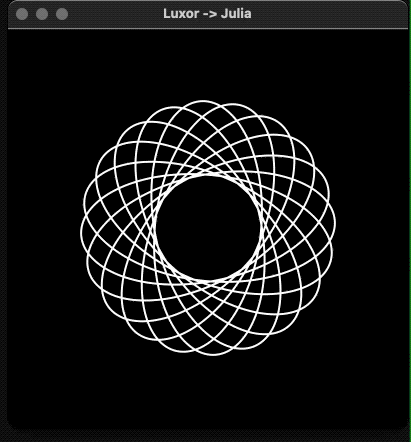
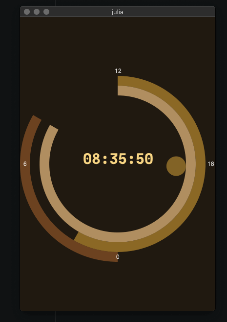
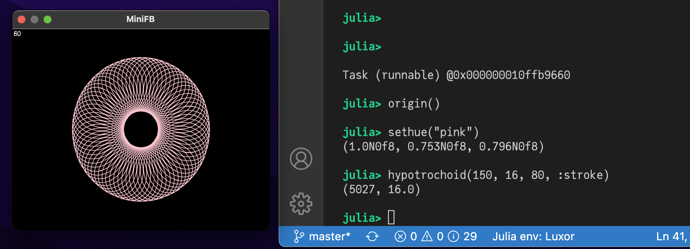
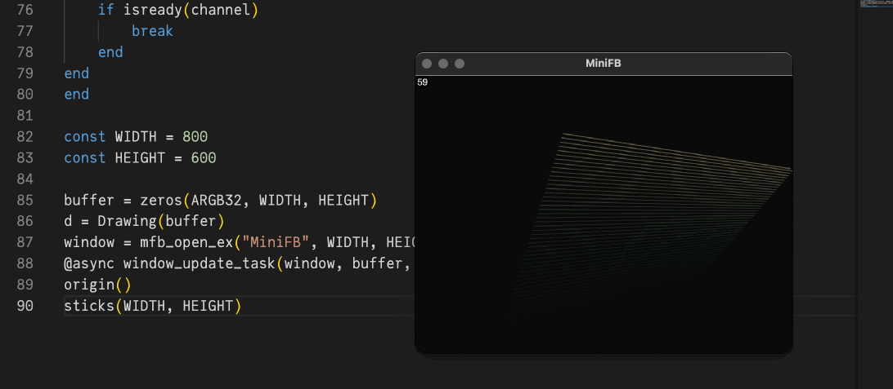
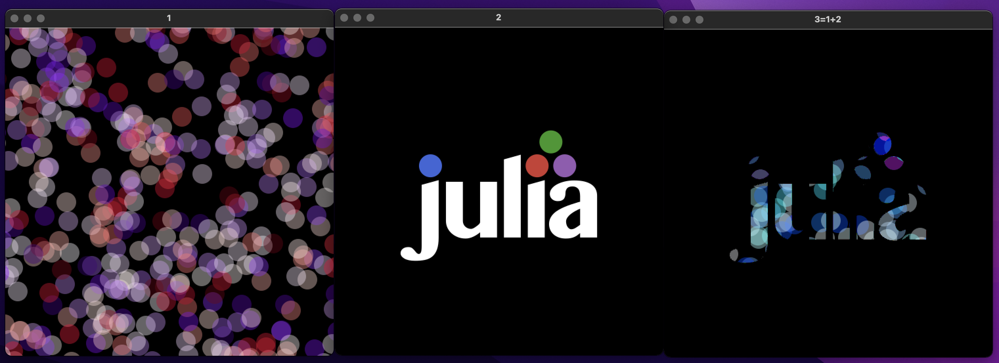

Interactive graphics and Threads
Continuous display
With the help of an external appication to manage windows, it's possible to use Luxor to create continuously changing graphics in a window.
The @play macro
This example uses the MiniFB package, which you can add using ] add MiniFB.
The file play.jl defines a simple macro, @play, which continuously evaluates and draws the graphics in a window. For example, this code:
using Luxor
include(dirname(pathof(Luxor)) * "/play.jl")
let θ = 0
@play 400 400 begin
#
background("black")
sethue("white")
rotate(θ)
hypotrochoid(200, 110, 37, :stroke)
θ += π/120
sleep(0.01)
#
end
enddraws a continuously rotating hypotrochoid.

Clock
This code also imports the @play macro.
The call to sleep reduces the CPU time, and allows other processes to run, but the millisecond animation will be less smooth as a result.

using Luxor, Colors, Dates, ColorSchemes
include(dirname(pathof(Luxor)) * "/play.jl")
function clock(cscheme=ColorSchemes.leonardo)
@play 400 600 begin
# background
sethue(get(cscheme, .0))
paint()
# 24hour sector
fontsize(30)
sethue(get(cscheme, .2))
h = Dates.hour(now())
sector(O, 180, 200, π/2, π/2 + rescale(h, 0, 24, 0, 2pi), :fill)
@layer begin
fontsize(12)
sethue("white")
@. text(["0", "6", "12", "18"], polar(190, [i * π/2 for i in 1:4]),
halign=:center,
valign=:middle)
end
# minute sector
sethue(get(cscheme, .4))
m = Dates.minute(now())
sector(O, 160, 180, 3π/2, 3π/2 + rescale(m, 0, 60, 0, 2pi), :fill)
# second sector
sethue(get(cscheme, .6))
s = Dates.second(now())
sector(O, 140, 160, 3π/2, 3π/2 + rescale(s, 0, 60, 0, 2pi), :fill)
# millisecond indicator
@layer begin
setopacity(0.5)
sethue(get(cscheme, .8))
ms = Dates.value(Dates.Millisecond(Dates.now()))
circle(polar(120, 3π/2 + rescale(ms, 0, 1000, 0, 2pi)), 20, :fill)
end
# central text
fontface("JuliaMono-Black")
sethue(get(cscheme, 1.0))
text(Dates.format(Dates.now(), "HH:MM:SS"), halign=:center)
sleep(0.05)
end
end
clock(ColorSchemes.klimt)Live coding with MiniFB
Here are some examples of how to use Luxor with MiniFB as the display window, without using the simple @play macro.
Interactivity
This example lets you type graphic commands at the REPL and see the results instantly displayed in a window.
First, run this code to connect a Luxor drawing to a MiniFB buffer:
using Luxor
using Colors
using MiniFB
function window_update_task(window, buffer, showFPS=false)
state = mfb_update(window, buffer)
updateCount = 0
startTime = floor(Int, time())
fps = "0"
while state == MiniFB.STATE_OK
if showFPS
elapsedTime = floor(Int, time()) - startTime
if elapsedTime > 1
fps = string(round(Int, updateCount / elapsedTime))
startTime = floor(Int, time())
updateCount = 0
end
@layer begin
setcolor("black")
circle(boxtopleft() + (15, 15), 15, :fill)
setcolor("white")
fontsize(20)
text(fps, boxtopleft() + (15, 15), halign=:center, valign=:middle)
end
end
state = mfb_update(window, buffer)
sleep(1.0 / 120.0)
updateCount += 1
end
println("\nWindow closed\n")
end
const WIDTH = 800
const HEIGHT = 600
buffer = zeros(ARGB32, WIDTH, HEIGHT)
d = Drawing(buffer)
window = mfb_open_ex("MiniFB", WIDTH, HEIGHT, MiniFB.WF_RESIZABLE)
@async window_update_task(window, buffer, true)Now, the window will display the results of any expressions you type at the REPL:

Live animations
If you want to do live animations in the window in a "while" loop, you need to call sleep() for a while to allow the window_update_task() to get some execution time.
In this example you can enter "q" and "return" in the REPL to stop the animation's while loop. Using "ctrl-c" to stop the animation could also stop the window update task by chance.

Code for this example
mutable struct Ball
position::Point
velocity::Point
end
function sticks(w, h)
channel = Channel(10)
#enter "q" and "return" to stop the while loop
@async while true
kb = readline(stdin)
if contains(kb, "q")
put!(channel, 1)
break
end
end
colors = [ rand(1:255), rand(1:255), rand(1:255) ]
newcolors = [ rand(1:255), rand(1:255), rand(1:255) ]
c = ARGB(colors[1]/255, colors[2]/255, colors[3]/255, 1.0)
balls = [ Ball( rand(BoundingBox(Point(-w/2, -h/2), Point(w/2, h/2))), rand(BoundingBox(Point(-10, -10), Point(10, 10))) ) for _ in 1:2 ]
while true
background(0, 0, 0, 0.05)
if colors == newcolors
newcolors = [ rand(1:255), rand(1:255), rand(1:255) ]
end
for (index, (col, newcol)) in enumerate(zip(colors, newcolors))
if col != newcol
col > newcol ? col -= 1 : col += 1
colors[index] = col
end
end
c = ARGB(colors[1]/255, colors[2]/255, colors[3]/255, 1.0)
for ball in balls
if !(-w/2 < ball.position.x < w/2)
ball.velocity = Point(-ball.velocity.x, ball.velocity.y)
end
if !(-h/2 < ball.position.y < h/2)
ball.velocity = Point(ball.velocity.x, -ball.velocity.y)
end
ball.position = ball.position + ball.velocity
end
setcolor(c)
line(balls[1].position, balls[2].position, :stroke)
sleep(1.0/120.0)
if isready(channel)
break
end
end
end
origin()
sticks(WIDTH, HEIGHT)Interactive graphics with multiple drawings
This next example shows how to work with multiple drawings. We'll create three windows, then combine (AND) the contents of the first two and display them in the third.

First, we'll setup our display buffers and MiniFB windows, one for each Luxor drawing:
using MiniFB, Luxor, Colors, FixedPointNumbers
WIDTH=500
HEIGHT=500
function window_update_task(window,buffer)
state=mfb_update(window,buffer)
while state == MiniFB.STATE_OK
state=mfb_update(window,buffer)
sleep(1.0/120.0)
end
println("\nWindow closed\n")
end
window1 = mfb_open_ex("1", WIDTH, HEIGHT, MiniFB.WF_RESIZABLE)
buffer1 = zeros(ARGB32, WIDTH, HEIGHT)
@async window_update_task(window1,buffer1)
window2 = mfb_open_ex("2", WIDTH, HEIGHT, MiniFB.WF_RESIZABLE)
buffer2 = zeros(ARGB32, WIDTH, HEIGHT)
@async window_update_task(window2,buffer2)
window3 = mfb_open_ex("3=1+2", WIDTH, HEIGHT, MiniFB.WF_RESIZABLE)
buffer3 = zeros(ARGB32, WIDTH, HEIGHT)
@async window_update_task(window3,buffer3)Buffers 1, 2, and 3 are the buffers for the three MiniFB windows. They'll appear on your display.
Next we'll create three Luxor drawings that connect to these buffers.
d1 = Drawing(buffer1)
Luxor.set_next_drawing_index()
d2 = Drawing(buffer2)
Luxor.set_next_drawing_index()
d3 = Drawing(buffer3, "julia.png")We now have three drawings which are continuously updated and visible in three separate windows. Let's start by drawing on drawing 1.
Luxor.set_drawing_index(1)
origin()
setopacity(0.4)
foregroundcolors = Colors.diverging_palette(
rand(0:360),
rand(0:360),
200, s=0.99, b=0.8)
gsave()
for i in 1:500
sethue(foregroundcolors[rand(1:end)])
circle(Point(rand(-300:300), rand(-300:300)), 15, :fill)
end
grestore()Now let's switch to drawing 2 and draw the Julia logo:
Luxor.set_drawing_index(2)
origin()
setopacity(1.0)
gsave()
julialogo(centered=true, bodycolor=colorant"white")
grestore()Finally, we'll switch to drawing 3, and set its contents by ANDing the buffers of drawings 1 and 2:
Luxor.set_drawing_index(3)
background("black")
buffer3 .= reinterpret(ARGB{N0f8},
(reinterpret.(UInt32,buffer1) .&
reinterpret.(UInt32,buffer2)))To finish, we'll set the opacity of each pixel to 1.0:
buffer3.=ARGB32.(RGB24.(buffer3))
finish()
preview()Threads
Luxor is thread safe. To run the examples below, start Julia with more than 1 thread:
julia> Threads.nthreads()
4As a first example, we'll produce multiple PNG files in parallel:
using Luxor, Colors
tempdir = mktempdir(;cleanup=false)
cd(tempdir)
function make_drawings(i::Int)
println(Threads.threadid())
colors = ["red", "green", "blue", "yellow", "pink"]
w = 300
h = 300
filename = "sample" * string(i) * ".png"
Drawing(w, h, :png, filename)
origin()
setcolor(colors[1 + i % 5])
background(0.0, 0.0, 0.0, 1.0)
circle(0, 0, 100, :fill)
finish()
return
end
Threads.@threads for i = 1:(2*Threads.nthreads())
make_drawings(i)
endAdvanced threads with live view
To demonstrate what is possible, we again show live graphics in MiniFB windows, but this time in different threads.
There are two ways to use threads with Luxor.
One way is to use a single thread for each window we want to show, i.e each window we spawn and the Luxor graphics inside is a different thread.
The other way to use threads is e.g. a single window, with several threads all drawing into the same buffer, which is shown in the single window. For this you need to utilize locks as shown in the second example below.
A thread for each window
First, here's an example where each window and its graphics is a single thread. No locks or channels are needed.
Let's start with the header and a helper function for our animation:
using ThreadPools
# the low level Threads.@spawn macro can not be used, because threads are scheduled
# randomly into available threadids. If a thread is spawned into an already running
# threadid, the former thread # is closed by the scheduler. So we use the better
# ThreadPools.spawnbg to spawn the threads.
using MiniFB, Luxor, Colors, FixedPointNumbers
mutable struct Ball
position::Point
velocity::Point
end
function step_ball(ball, w, h, r)
if ball.position.x - r < -w / 2 || ball.position.x + r > w / 2
ball.velocity = Point(-ball.velocity.x, ball.velocity.y)
end
if ball.position.y - r < -h / 2 || ball.position.y + r > h / 2
ball.velocity = Point(ball.velocity.x, -ball.velocity.y)
end
ball.position = ball.position + ball.velocity
return ball
endOpen and run the first window in its own thread:
function window_ball()
w=500
h=500
r=50
buffer = zeros(RGB24, w, h)
ball=Ball(Point(0, 0), rand(BoundingBox(Point(-10, -10), Point(10, 10))))
Drawing(buffer)
origin()
window = mfb_open_ex("Ball", w, h, MiniFB.WF_RESIZABLE)
state = MiniFB.STATE_OK
while state == MiniFB.STATE_OK
ball=step_ball(ball, w, h, r)
background(0.0, 0.0, 0.0, 1.0)
setcolor("red")
circle(ball.position.x, ball.position.y, r, :fill)
state=mfb_update(window, buffer)
sleep(1.0/120.0)
end
println("\nWindow closed\n")
end
spawnbg(window_ball)Open and run a second window in its own thread:
function window_stick()
w=500
h=500
r=0
buffer = zeros(RGB24, w, h)
balls=[Ball(rand(BoundingBox(Point(-w/2, -h/2),
Point(w/2, h/2))),
rand(BoundingBox(Point(-10, -10), Point(10, 10)))) for _ in 1:2]
Drawing(buffer)
origin()
background(0.0,0.0,0.0,1.0)
window = mfb_open_ex("Sticks", w, h, MiniFB.WF_RESIZABLE)
state = MiniFB.STATE_OK
while state == MiniFB.STATE_OK
background(0.0, 0.0, 0.0, 0.05)
setcolor("green")
for ball in balls
ball=step_ball(ball, w, h, r)
end
line(balls[1].position, balls[2].position, :stroke)
state=mfb_update(window, buffer)
sleep(1.0/120.0)
end
println("\nWindow closed\n")
end
spawnbg(window_stick)If you have threads left you can start another thread with a third window:
spawnbg(window_stick)If you run out of threadids, the command spawnbg(window_stick) will block the REPL until a thread is freed, e.g. by closing one of the windows.
A single window with graphics of several threads
The next example shows a single window/buffer where several threads are drawing into it. This needs some extra caution by utilizing locks, because every thread uses the same drawing buffer. Therefore all drawing commands needs to be synchronized with lock/unlock:
using ThreadPools
using MiniFB, Luxor, Colors
struct Window
c::ReentrantLock
w::Int
h::Int
d::Drawing
buffer::Matrix{ARGB32}
function Window(w,h)
c=ReentrantLock()
b=zeros(ARGB32, w, h)
d=Drawing(b)
origin()
new(c,w,h,d,b)
end
end
function window_update_task(win::Window, showFPS=true)
w=win.w
h=win.h
updateCount=0
startTime=floor(Int, time())
fps="0"
sb=zeros(ARGB32, 105, 55)
window = mfb_open_ex("MiniFB", w, h, MiniFB.WF_RESIZABLE)
state=MiniFB.STATE_OK
set_drawing = true
while state == MiniFB.STATE_OK
lock(win.c)
if set_drawing
currentdrawing(win.d)
set_drawing = false
end
if showFPS
elapsedTime=floor(Int,time())-startTime
if elapsedTime > 1
fps=string(round(Int,updateCount/elapsedTime))
startTime=floor(Int,time())
updateCount=0
end
sb.=win.buffer[1:105, 1:55]
@layer begin
(dx,dy) = Point(0.0, 0.0) - getworldposition(Point(0.0, 0.0);centered=false)
setcolor(1.0, 0, 0, 0.5)
fontsize(50)
text(fps, Point(5+dx, 5+dy), halign=:left, valign = :top)
end
end
state=mfb_update(window,win.buffer)
if showFPS
win.buffer[1:105, 1:55].=sb
end
background(0, 0, 0, 0.05)
unlock(win.c)
sleep(1.0/120.0)
updateCount+=1
end
println("\nWindow closed\n")
endThat's all we need to define a window with a fps display. Let's define it and run it as a new thread:
win = Window(800, 600) # the window definition
# we need a function without parameter, that's what we create here:
let window=win
global t_window_update_task
function t_window_update_task()
window_update_task(window)
end
end
# run the task as a new thread:
spawnbg(t_window_update_task)The window with a FPS display shows up. It runs in its own thread so we can still use the REPL to create new threads which draw into this window. The most important special code here is:
currentdrawing(win.d)We start a new thread for every drawing and because the Luxor drawings of different threads are separated from each other to ensure thread safety, we overwrite the drawing in each thread with the drawing started with
win=Window(800, 600)and stored in the win-object. See the constructor in struct Window.
Let's show it:
mutable struct Ball
position::Point
velocity::Point
end
function stick(win)
w = win.w
h = win.h
colors = [rand(1:255), rand(1:255), rand(1:255)]
newcolors = [rand(1:255), rand(1:255), rand(1:255)]
c = ARGB(colors[1] / 255, colors[2] / 255, colors[3] / 255, 1.0)
balls = [Ball(
rand(BoundingBox(Point(-w / 2, -h / 2), Point(w / 2, h / 2))),
rand(BoundingBox(Point(-10, -10), Point(10, 10))))
for _ in 1:2]
set_drawing = true
while true
if colors == newcolors
newcolors = [rand(1:255), rand(1:255), rand(1:255)]
end
for (index, (col, newcol)) in enumerate(zip(colors, newcolors))
if col != newcol
col > newcol ? col -= 1 : col += 1
colors[index] = col
end
end
c = ARGB(colors[1] / 255, colors[2] / 255, colors[3] / 255, 1.0)
for ball in balls
if !(-w / 2 < ball.position.x < w / 2)
ball.velocity = Point(-ball.velocity.x, ball.velocity.y)
end
if !(-h / 2 < ball.position.y < h / 2)
ball.velocity = Point(ball.velocity.x, -ball.velocity.y)
end
ball.position = ball.position + ball.velocity
end
lock(win.c)
if set_drawing
currentdrawing(win.d)
set_drawing = false
end
setcolor(c)
line(balls[1].position, balls[2].position, :stroke)
unlock(win.c)
sleep(1.0 / 60.0)
end
end
# again a function for calling without parameter:
let window=win
global t_stick
function t_stick()
stick(window)
end
end
# run the thread and let the sticks fly:
spawnbg(t_stick)Because our threads are synchronized via lock/unlock we can spawn low-level threads as much as we want and our machine allows:
function spawn_many()
tid=1:Threads.nthreads()
for i in tid
t=Task(t_stick)
ccall(:jl_set_task_tid, Cvoid, (Any, Cint), t, i-1)
schedule(t)
end
endNow you can repeat it as much as you dare:
spawn_many()